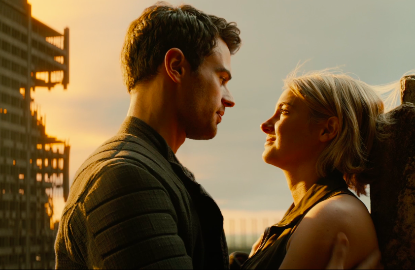
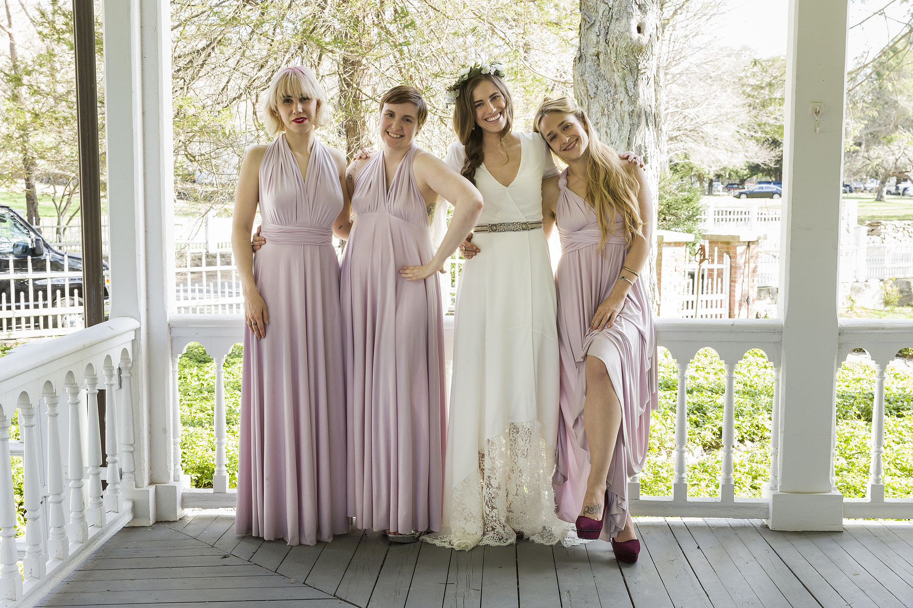

Aaron Paul Tweets for Dark Tower Role
Aaron Paul, most well known for his role of Jesse Pinkman on Breaking Bad, tweeted to author Stephen King to put in a good word for him to be cast in the movie based on his popular book, The Dark Tower. Rumors about the casting were all over the internet, so Aaron Paul decided to take the matter into his own hands and ask King directly. Although there is no official word on the casting, Aaron Paul claims his twitter exchange is still exciting.
Read more to find out more about their twitter exchange...Box Office Report

- Zootopia: The Disney animated movie took the top spot, earning an estimated $201.8 million
- Allegiant: The Divergent sequel failed to live up to the original, only earning $29.1 million.
- Miracles From Heaven: This movie, starring Jennifer Garner, earned an estimated $15 million over the weekend and $18.6 million since it opened on Wednesday
Watch: Emilia Clarke and Sam Claflin Find Love in ‘Me Before You’ Trailer
Based on the popular novel, Me Before You, by JoJo Moyes, the trailer for movie has been released starring Emilia Clarke and Sam Caflin. Will Trainer's (Caflin) life has been completely altered after a devastating accident. Louisa Clark (Clarke) is hired to care for him and shows him the point of living as their relationship gets stronger. The book, which was released 2012, gained popular attention for its heart warming story.
Me Before You is set to release on June 3, 2016 in the United States.
dfadjhfkladhfaeiurhaljskdf
dfadjhfkladhfaeiurhaljskdf
dfadjhfkladhfaeiurhaljskdf
dfadjhfkladhfaeiurhaljskdf
Watch the trailer here...Alexis Bledel and Kelly Bishop reunite in new Gilmore Girls revival photo
Mother-daughter classic, Gilmore Girls, has been picked up for a revival on Netflix after ending after 7 seasons in 2007. One of the cast members tweeted out a picture of main character Rory, played by Alexis Bledel, and her grandmother Emily, played by Kelly Bishop. Fans are eagerly waiting for the new season to be released and to hear which beloved characters will be coming back to Gilmore Girl's hometown of Stars Hollow.
Click here to see the picture of the reunion...Scandal Stars Confirm: Hillary Clinton's Visit to Their Set Was "Mind-Blowing"
Democratic frontrunner Hillary Clinton visited the set of ABC's Scandal. The entire cast thought the experience was surreal. Lead actress Kerry Washington explains about the visit, "I think she really enjoyed comparing her memories of the Oval Office to our fake Oval Office."
Read more to learn about Clinton's set visit...What TV Shows Have Been Canceled or Renewed?
Any TV lover wants to know which of their favorite shows will be picked up for the next season and if any will be taken off the air. Television networks are already making major decisions about the shows that will not be picked up for the upcoming Summer and Fall season. So far, long standing shows, such as Once Upon a Time, Scandal, and Grey's Anatomy, have all been picked up for another season. The Bachelor has been picked up for a 21st season, while Law & Order: SVU has been given an 18th season. HBO's Girls (see picture) has been picked up for a 7th and final season. Read more to learn what other shows have been picked up...